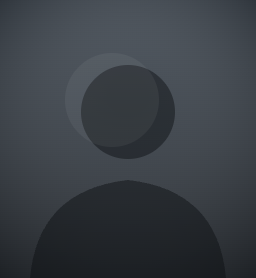

9:41

{{ t.goalsScored }}
{{ n.goals }}{{ t.perMatch }}
{{ t.biggestWin }}
7–0
v Valladolid · MD22
{{ t.cleanSheets }}
{{ n.cs }}/ 38
{{ t.csNote }}
{{ t.failedToScore }}
{{ n.fts }}/ 38
{{ t.ftsNote }}
{{ t.streak }}MD9 → MD29
{{ n.streak }}{{ t.straight }}
{{ t.perMw }}
{{ t.home }}{{ t.away }}
{{ t.home }}15-2-2 · {{ n.homeG }}
{{ t.away }}13-3-3 · {{ n.awayG }}
{{ t.conceded }}
{{ t.lateShare }}
{{ n.late }}%
{{ t.lateNote }}
{{ t.concededLate }}
{{ n.concLate }}%
{{ t.lateNote }}
{{ t.comebacks }}
{{ n.cbPts }}
{{ t.cbNote }}
{{ t.discipline }}
{{ n.yel }}
{{ n.red }}
{{ t.discNote }}
{{ t.foot }}

#9 · {{ t.forward }}
Robert Lewandowski
{{ t.change }}
{{ n.pg }}{{ t.goals }}
{{ n.pa }}{{ t.assists }}
{{ n.pi }}{{ t.involvements }}
{{ n.npg }}{{ t.nonPen }}
{{ t.penalties }}
{{ t.openPlay }}21
{{ t.fromSpot }}6
{{ t.conversion }}{{ n.conv }}% · 6/7
{{ t.timing }}
{{ n.plate }}%{{ t.after75 }}
{{ n.stop }}
{{ t.stoppage }}
{{ t.firstHalf }} · 1215 · {{ t.secondHalf }}
{{ t.partners }}→ Lewandowski
{{ k.label }}
{{ k.value }}
{{ k.note }}
{{ t.discipline }}
{{ n.pyel }}
0
{{ t.quickest }}
11'
v Atlético · MD17
{{ t.footPl }}